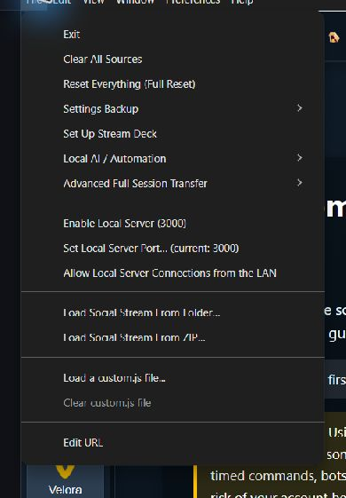

Quick Chooser
| I Want To | Kasuta | Default Address |
|---|---|---|
| Relay chat and supported commands between Social Stream pages without the normal remote transport | Enable Local Server | ws://127.0.0.1:3003Older upgraded installs may use 3000. |
| Let an AI tool or local script inspect and control the desktop app | Local Control API and MCP | http://127.0.0.1:17777 |
| Run the complete desktop app on a Linux home server or VPS without a monitor | Headless SSApp hosting | No new public API; remote control uses the normal Social Stream session. |
| Play an approved local audio, image, or video file in Event Flow | Local media server | http://127.0.0.1:3001 |
1. Enable Local Server
This File-menu option starts a room- and channel-aware WebSocket relay inside the desktop app. Supported Social Stream pages can use it to exchange chat and commands on the same computer. It is an alternative endpoint for page-specific server routing.


It does not host the Social Stream website, capture a platform by itself, or provide the HTTP automation API. Start with the Enable Local Server guide.
2. Local Control API and MCP
This opt-in loopback API lets programs on the SSApp computer manage supported sources and settings, read status and diagnostics, inspect app or source windows, and follow captured events. The bundled MCP adapter presents those operations as tools to compatible AI clients.
Enable it under Fail > Kohalik AI / Automatiseerimine. It is separate from Enable Local Server. Vaata Local Control API and MCP guide.
3. Headless Home Server or VPS
Headless mode runs the full Electron desktop app with its source windows hidden. On Linux it still needs a display backend such as Xvfb. This is useful when a dedicated computer should keep capturing chat without a monitor attached.
Headless mode does not create a public control API. Remote control uses Social Stream's normal WebRTC or WebSocket transport. See the headless hosting guide.
4. Local Media Server
The desktop app starts this automatically when local Event Flow media is available. It serves only files approved through SSApp and selected runtime assets through a random per-profile token path.
It is not a general web or file server. See Media Files for Event Flow to choose between local files, uploads, and cloud hosting.
Server Fallback Is Different
Settings such as Send chat messages to API server ja Dock sends its commands to Extension via server choose how chat and commands are routed. Their generated URL flags include server, server2, ja server3.
Those settings normally use Social Stream's hosted WebSocket service. When a supported page also has localserver, it uses the desktop app's local relay instead. See Sessions, Passwords, Relay, and Server Modes for the routing controls.
Use freshly generated links. Routing flags are page-specific. Do not copy a server flag from one page to another and assume it has the same meaning.
Other Temporary Local Ports
Some sign-in and account-link workflows briefly open a loopback callback port and close it when the workflow ends. These temporary listeners are not general SSN servers or automation APIs.